第22章：多资产期权（Multiasset Options）
The principal difference between a quant and a trader is that a quant favors a flawless model based on imperfect assumptions while the trader prefers an imperfect model based on flawless assumptions. —— Taleb
导读：本章要解决的问题
Taleb 开篇这句对 quant 与 trader 的区分定下了全章的基调。多资产期权是一类引入了第二个、第三个乃至上百个标的的结构，它在香草期权那一整套希腊字母之外，多出一个全新的风险维度：相关性（correlation）。而相关性恰恰是那个"假设最容易出错、模型最容易做得漂亮"的地方。本章的任务，就是把交易员对相关性的直觉，搭到我们熟悉的协方差矩阵、测度变换和污染原理上。
对一个已经掌握 BSM、多元几何布朗运动、协方差矩阵的读者，本章要补的集中在四件事上：
- 相关性是一个可以交易的量，它有自己的 vega，称为 correlation vega。把相关性当常数处理是物理科学训练带来的坏习惯，在金融里会漏掉一整块风险。
- 多资产结构的 delta 不再是一个标量，而是一个梯度向量 ；gamma 不再是一个数，而是一个矩阵。是否相信相关性稳定，会让两个交易员对同一结构做出完全不同的对冲。total delta 要通过 这样的二次型来度量。
- 线性组合（篮子、价差）带来一个乘积/商所没有的麻烦：若干对数正态资产之和不再是对数正态，但它们的乘积和商仍是。这把篮子期权和亚式期权归到了同一类定价困难里。
- 相关性产品，尤其是写在"有偏资产"（biased asset）上的产品，对相关性的估计极不稳定，静态地看希腊字母毫无意义。墨西哥指数票据的案例把这点演示得淋漓尽致。
笔记沿原文顺序展开：先讲三大类多资产结构的总览，再用彩虹期权把相关性风险管理的直觉建立起来（correlation vega、相关/非相关希腊字母、outperformance option），接着是线性组合与篮子期权的对数正态难题和 correlation trap，最后落到 composite underlying 和墨西哥指数票据的三角分解案例。
三大类多资产结构
Taleb 提醒了一个常被忽视的事实：任何不以本币作为 numeraire 的货币对，都可以解读成一个多资产期权。多资产结构本身可以从篮子一路排到彩虹，但风险管理的核心可以在一个简化的双资产结构上讲清楚。
数学家习惯先在低维解决问题，再推广到 。Taleb 建议读者照同样的路子，把结构从低维推广到高维。这里正是"定量交易"的起点：在低维里，纯交易员的判断和直觉够用；进入高维，矩阵分析就成了必需品。
多资产结构分三类：
- 选择类（Choice）：在两个或多个工具之间做选择的期权，best of、worst of、彩虹期权等。本章用彩虹期权作样本分析。
- 线性组合类（Linear Combinations）：篮子、价差。这一类的麻烦在于，两个指数布朗运动之和不再是指数布朗运动，所以它们和亚式期权一样，定价上有额外的复杂性，并在用其他工具对冲时带一点 skew 敞口。
- 乘积或商类（Product or Quotients）：标的是两个或多个工具的乘积或商。它们好定价，却往往更难对冲。本章用墨西哥结构票据作样本。
Taleb 的判断很实在：彩虹期权就足以建立多资产风险管理的基本理解。结构的花样无穷无尽，但同一套动态对冲方法适用于所有，没必要把组合列成一本电话簿。
一、资产间的选择：彩虹期权（Rainbow Options）
彩虹期权是在多个标的资产上、带多个行权价的期权。它通常只有一个到期日，支付等于所有行权价中"最深实值"的那一部分：
其中 指明每条腿是 put 还是 call（可以是资产 1 上的 call、资产 2 上的 put），简单情形下只有一个到期 （结构设计者也可以把生活搞复杂一点，做成多到期结构）。
Taleb 用一个最简例子建立直觉：一张写在资产 、 上的"二选一"期权，两者现价都 100，行权价都是 100。先看 30 天到期的敏感性，再把到期拉到 6 个月做更充分的分析。两个资产都在 15.7% 波动率交易，初始相关性假设为 50%。注意可以把基准从 100 改成别的数，只要价格和行权价同比例缩放即可。
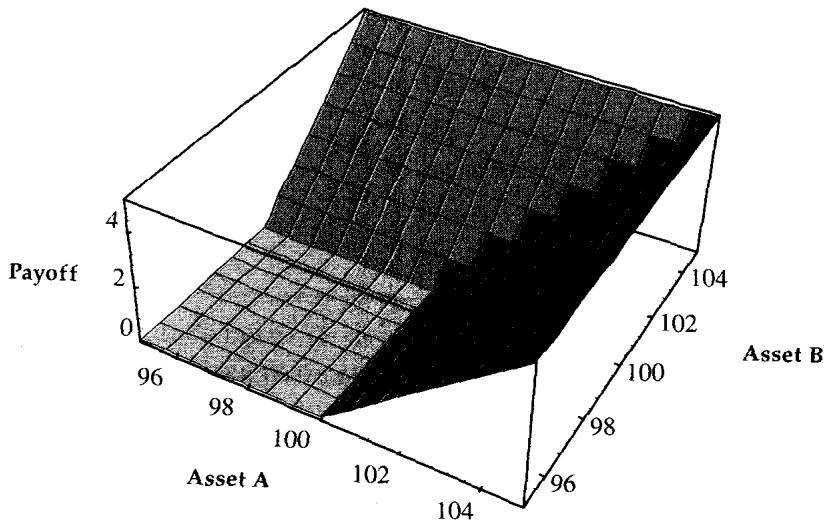
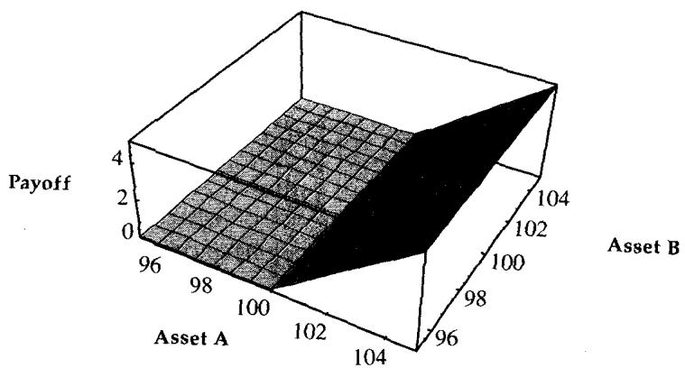
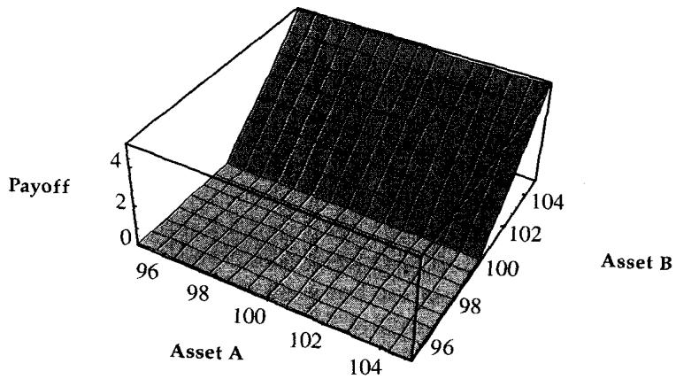
把图 22.1 与图 22.2、22.3 对照就能直观看出：二选一结构的到期支付覆盖的区域，比任何单条腿单独看都大，却又比两个独立期权之和小一些。用污染原理来想，这个结构在存续期内的价格曲面像一个充了气的气球，随着波动率或到期时间下降，气球会逐渐贴回图 22.1 的支付平面。
Correlation Vega：被研究者忽视的那个希腊字母
除了常规的一整套希腊字母，这个结构还对相关性敏感。Taleb 在此点出一个被研究者普遍忽视的量：相关性 vega（correlation vega）。很多人因为物理科学训练不当，习惯把相关性当成常数写掉，于是漏掉了它。
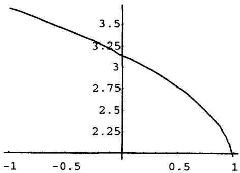
图 22.4 显示结构价格随相关性的变化。相关性被限制在 到 之间，所以双资产结构不需要模拟太远；高维结构才需要做更难的矩阵分析。两个极端值得记住：
相关性为 时，"有两个资产"这件事变得无关紧要。因为两个资产用同样的波动率估值，结构就按其中任一个的价格交易。如果由于 、 之间的交叉波动率，两资产波动率有差异，结构会跟随两者中较高的那个。
相关性为 时，结构按一个普通期权的两倍价格交易，因为它保证在两个资产之一上实值。一个资产每往下走，另一个被反对称地往上拉，所以总有一个实值。
上面用的是两条 call 腿。如果是一条 call 加一条 put（到期只能行权其一），结论相反：负相关会压低价格。
直观地说，correlation vega 就是相关性变化带来的结构价格变化。对超过两个资产的多资产期权，会有许多个 correlation vega，每一对资产都有一个。4 个资产的结构，其 correlation vega 排成一个矩阵：
对角线当然是 0（每个资产和自己相关性为 1，对其求导无意义），只显示半个矩阵，因为相关性是镜像对称的（）。每一个相关性都对应一个敏感性。
把这套方法推进一步，就落到协方差矩阵的语境里，即整个组合的风险。Taleb 把组合的协方差矩阵记作 ：
其中 是资产 与 的协方差。交易员通常学会把 看成"单资产波动率"在多维下的等价物。整个矩阵要满足一些约束，相关性和波动率必须落在某个边界内，否则矩阵会变成负定，相当于一个负的波动率，这是连经验丰富的期权交易员都没见过的东西。
理论映射：correlation vega 是协方差结构上的污染原理
把 correlation vega 接回我们熟悉的理论，它其实就是 型支付对协方差矩阵元素的偏导。二选一 call 的价值可以写成
而 ，于是结构里嵌着一个写在价差 上的看涨。价差的方差是
相关性 下降，价差方差上升，那个嵌入的 spread call 变贵，整个二选一结构随之升值。这正是图 22.4 的曲线为何在 时翻倍、在 时退化成单腿的代数根据。Taleb 把相关性当成"可交易、有 vega 的量"，本质是说协方差矩阵 的每个非对角元都是一个可以产生 P/L 的状态变量，正如波动率之于单资产。 必须保持半正定，这是"波动率不能为负"在多维下的推广，几何上对应相关性矩阵落在一个椭球约束内。
相关与非相关希腊字母
双资产期权有不止一个 delta，对冲者必须做一些假设（见图 22.5）。一个相信相关性稳定的人，必然和一个"阴谋论者"用不同的方式交易同一个结构。因此需要构造梯度（gradient），也叫 total delta 或 correlated delta，由若干偏 delta 组成：
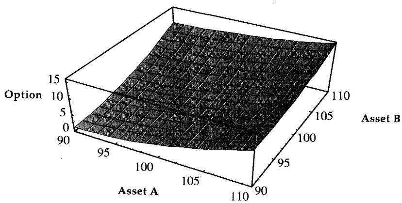
称为 上的偏 delta，表示在"假设 按它与 的相关性同步移动"前提下，结构对 价格变化的敏感性。 同理。梯度 （即 correlated delta）表示在" 按它与 的相关性、 按它与 的相关性各自移动"前提下，结构对两资产价格变化的敏感性。
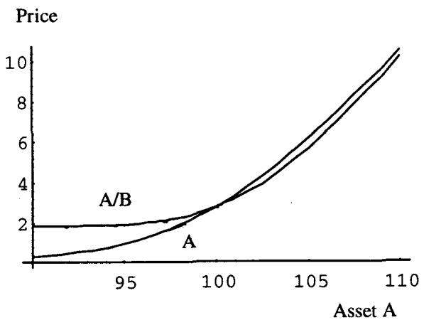
图 22.6 给出两次对资产 的模拟：一次只动 、不让 跟着相关地动，另一次把 的相关移动考虑进去。资产 单独移动，和" 移动且 相关地跟随"，给出不同的结果。所以真实风险要同时看两个 delta（、）以及总 delta。表 22.1 显示只动 （冻结 ）时，偏 delta 随 的变化：
| 资产 A | |
|---|---|
| 95 | 0.18 |
| 98 | 0.29 |
| 100 | 0.37 |
| 102 | 0.45 |
| 105 | 0.57 |
要度量总的、非相关化的 delta，需要更复杂的矩阵分析：
对我们的两资产头寸，它展开为
这个二次型把两条腿的方向敞口、各自波动率以及它们之间的协方差揉成一个标量，等于"考虑了相关移动后整个头寸的瞬时方差贡献"。由此引出 partial gamma 的概念。每个结构有四个可能的 delta，也就有四个 gamma，只看现实中有意义的相关 gamma：
含义是： 是 因 变化产生的改变（ 按相关性移动）； 是 因 变化产生的改变（ 按相关性移动）； 是 因 变化产生的改变，且 ； 是 因 变化产生的改变。
理论映射：delta 是梯度，gamma 是 Hessian，total delta 是二次型
这一节其实是把单变量微积分换成多变量微积分。单资产期权的 delta、gamma 是一阶、二阶导数；多资产期权的 delta 自然成为梯度 ，gamma 成为 Hessian 矩阵 ，对角线是各自的 ，非对角线是交叉 gamma （即 cross-gamma，期权理论里也叫 cega 一类的交叉敏感）。 正是 Hessian 对称（混合偏导可交换，Schwarz 定理）。而 这个二次型，就是组合瞬时方差
它告诉对冲者：在相信某个 的前提下，头寸的真实方向风险是多少。"相信相关性稳定 vs 阴谋论者"的分歧，本质是对 取不同估计、从而把 投影到不同方向上。Taleb 在这里提前给出了后面 bucketing 和组合风险管理的数学骨架：单资产世界里你管理标量，多资产世界里你管理向量和矩阵，而对冲的稳健性取决于你对 估得有多准、它在压力下有多稳定。
Outperformance Option：把 max 拆成一个资产加一个价差
另一个涉及选择的期权是 outperformance option（相对表现期权）。它让持有人有权按预定比率用一个资产换另一个，通常是写在最大值上的 call、或最小值上的 put。它是研究 numeraire 问题的有用工具，一个有趣的视角是指数配置：一个没有固定配置的基金经理，可以假想自己持有一个理论 delta，类似这种期权的 delta，然后用 delta 向量和 gamma 矩阵持续调整头寸。
outperformance option 一旦写明，就很容易看成价差期权：
也就是说，相对表现期权不过是"一个资产加上两资产之间的一个价差期权"。而价差期权最好从篮子的视角看，即把其中一个资产赋负权重。Taleb 顺手点出一个例子：也许所有 outperformance option 之母，是债券期货上的期权，它让期货空方有权交割合格债券中最便宜的那只（cheapest-to-deliver），于是它成了写在若干资产最小值上的期权。
理论映射：换资产期权与 change of numeraire
这个恒等式是 Margrabe（1978）换资产期权的出发点。把 选作 numeraire（计价单位），价差 就变成"以 计价的、写在 上的看涨"，于是一个二维定价问题被降到一维，等价波动率是 。这正是 Taleb 说"outperformance option 是研究 numeraire 问题的好工具"的理论含义：选谁做 numeraire，就把哪一个资产的随机性"除掉"，相关性则原封不动进入等价波动率。cheapest-to-deliver 的债券期货因此是一个写在最小值上的期权，它的定价天然依赖各候选债券之间的相关性矩阵。
二、线性组合：篮子与价差
写在资产线性组合上的期权，规格为
这一类包含篮子期权、价差期权，以及任何能想到的组合，亚式期权也可归入其中。几个例子：、 时是写在两资产之和上的 call/put/digital；、 时是写在两资产价差上的期权，通常称为 Margrabe 期权；、权重可变时，标的篮子就是一个股指。
对数正态难题：和不再对数正态，积与商仍是
线性组合带来一个其他结构没有的问题：对数正态性（lognormality）。设资产 、 都对数正态：
其中 、 是单位方差、零均值的 Wiener 过程。容易看出，和 无法写成几何布朗运动的形状，差 也不行。但乘积 可以：
商 也可以：
两者都是几何布朗运动。这就是为什么 Taleb 把乘积/商类归为"好定价"，把和/差类归为"有麻烦"：前者在指数里相加，仍是正态指数；后者是两个对数正态随机变量的算术相加，结果分布没有封闭形式。
理论映射：为什么积保号而和不保号
对数正态的定义是"取对数后服从正态"。乘积 取对数得 ，两个正态之和仍是正态，所以 仍对数正态；商同理， 仍正态。而和 取对数得 ，没法拆成 、 的线性组合，正态性被破坏。后果是：篮子（加权和）的真实分布不是对数正态，但市场上充斥着"把篮子当成一个自带对数正态过程的商品来定价"的做法。这和"成分股对数正态"在逻辑上冲突，SP100 的成分若都对数正态，SP100 这个加权和就不可能也对数正态。操作上人们只好武断地假设：篮子或成分中交易最活跃的那个是对数正态的那一方。这个问题在互换和 Eurodollar 期权里同样出现，一个 strip 是按贴现因子加权串起来的 Eurodollar 篮子，写在 strip 上的期权就是篮子期权，于是要问：到底谁该是对数正态的？
一个缓解因素：股指和固定收益产品里，当成分之间相关性高时，和会更接近对数正态分布。直觉上，高相关让成分同步移动，加权和的行为越来越像单个对数正态资产；相关性低时，分散效应让和的分布更对称、更偏离对数正态。
下面的例子说明问题。两个不相关资产 、，独立对数正态，波动率 、。篮子规则给出篮子 的波动率为加权的波动率平方根（此处相关性为零）：
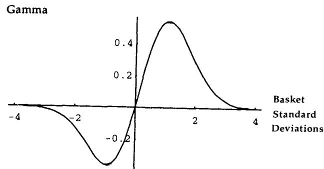
图 22.7 用图形说明：一个已知波动率的过程，为什么不是对数正态。设无漂移、等权 0.5，、 初始都 100，波动率 50%。一个 long 资产期权组合、short 篮子期权（按 gamma 中性的比率）的头寸，其敏感性看起来像一个 risk reversal（风险逆转）。图 22.7 显示高波动率下的这种头寸。这是因为篮子的真实分布与"假装它对数正态"之间的差异，体现为一个 skew 形状的残差，而 risk reversal 正是交易 skew 的工具。这个问题在亚式期权里会有更尖锐的版本。
Correlation Trap 与篮子的 correlation vega
忽略对数正态问题，操作者可以把多资产结构当成一个 pseudovanilla（伪香草）期权，用篮子的波动率给它定价；要得到相关性敏感性，就在不同相关性水平下重新定价，最好的近似是用 vega 乘以相关性对波动率的影响。
伪香草是为风险管理目的、用来测试某个复杂产品某些敏感性的期权。篮子的伪香草，是按篮子净波动率交易的那个期权，只能用来测试部分敏感性。障碍期权的伪香草，如前所见，若只测 skew 效应是一个 risk reversal，若只测波动率期限结构的敏感性则可以是一个 calendar spread。
设篮子 ，用 表示篮子波动率、 表示资产 的波动率、 表示相关性，则
由此，结构的 correlation vega 为
Taleb 给了一个简化的真实例子：一张写在 USD-DEM 与 USD-JPY 平均值上的 1 年期期权，行权价 1.19（为简化把日元除以 100），目前平值。USD-DEM 交易在 1.42，USD-JPY 在 100。利率 USD 5%、DEM 5%、JPY 1%。一个有用的提示：算篮子的远期可以直接对各远期做线性加权，因为函数是齐次的，
所以操作者可以忽略远期（不考虑 shadow gamma），直接用现货算波动率。USD-DEM 与 USD-JPY 的 6 个月波动率分别是 11.85% 和 11%，权重各 0.5，相关性 0.60。忽略对数正态问题，篮子期权可按一个波动率为 10.28% 的香草定价。若相关性降到 0.5，篮子波动率降到 9.96%；若降到 ，期权价格会被压缩。表 22.2 给出这个例子，以及在 ±0.9 极端处的套利异常：
| 相关性 | 篮子波动率 | 价格 | Correlation Vega |
|---|---|---|---|
| 1.0 | 11.50% | 4.58 | — |
| 0.6 | 10.29% | 4.10 | 0.12 |
| 0.0 | 8.14% | 3.24 | 0.15 |
| -0.5 | 5.77% | 2.30 | 0.21 |
| -0.9 | 2.62% | 1.04 | 0.41 |
注意 correlation vega 随相关性下降而上升：在 接近 1 时每降 0.1 只损失约 0.11 的波动率点，在 接近 时却高达 0.41。这种非线性正是下面这条规则的来源。
当任一波动率独立（或部分独立）可变时，篮子期权必须在低于"相关性为 1 所给的价位"、高于"相关性为 所给的价位"之间交易。这是污染原理的一个简单推广。原因是：相关性对卖方在邻近 1 处变凸，对买方在邻近 处变凸。
理论映射：correlation trap 就是相关性维度上的 Jensen 不等式
correlation trap 是污染原理在相关性轴上的复述。篮子波动率 作为 的函数是凹的还是凸的，决定了在 随机波动时，期望波动率相对"用平均 算出的波动率"是高还是低。从上面 correlation vega 的表达式看， 且这个一阶敏感随 下降而变大，意味着 作为 的函数在低相关区更陡，呈现出对卖方不利的凸性。一旦 本身可变（它当然可变），按一个固定 定出的价格就会被 Jensen 不等式系统性地纠偏：卖方在 邻近 1 时 short convexity，会低估风险；买方在 邻近 时 long convexity。所以稳健的做法是把价格夹在两个极端相关性给出的边界之间，正如香草期权必须夹在零波动率内在价值和无穷波动率上界之间。这正是"相关性是一个会动、要收凸性费的状态变量"的严格表述。
Taleb 顺带提到 quanto option（数量调整期权）：它的交易残值（P/L）依赖一个可能与之相关的外币汇率，是一个需要纳入考虑的弱相关效应。
三、复合标的证券（Composite Underlying Securities）
复合标的证券是支付与两个或多个证券价格的某个公式挂钩的证券。操作者通常把"以某种方式组合、使得无法做非相关 delta 中性"的资产期权归入此类。这类证券是量身定制的，没有稳定规格，可以是比率，也可以是线性或非线性的加权组合。线性组合前面已经讲过，下面的案例研究一张指数票据（涉及一个商的组合）。
定义这些类别本身就很困难，所以每一个都得量身定价，通常靠数值方法。涉及和时会出问题：两个对数正态收益的比是对数正态，但它们的和不是，这又把操作者带回篮子问题。这类工具常涉及相关性，操作者在求偏导（偏 delta、偏 gamma 等）时要格外小心，因为相关性度量会表现出严重的不稳定。Taleb 提前给出一句忠告：不要在没有"矫正镜片"的情况下去看路径依赖的支付，因为一旦支付以某条路径为条件，最终的条款书会严重误导，正如后面法郎案例所示。
四、定量案例研究：墨西哥指数票据
这个案例让读者研究一种只能用相关性分析才能分解的复合标的证券。
这张指数票据还演示了一类经典问题：在不完全市场中呈现、必须按统计基础（期望到期值）而非无套利基础定价的工具。因此不能再用瞬时波动率和相关性，而要用期限（到期）波动率和相关性。Taleb 还建议用交易员的判断去描述离散的可能状态，而不是连续时间金融。
背景与条款
作者的一位朋友被指数票据销售员告知，某张票据"内嵌了一个货币期权"，因而在其公司眼里更值钱。这位朋友经验老到，对销售员关于期权估值的意见自然打折扣，于是请作者把这张票据和书里的主题联系起来。本案例只做直觉分析，定价尝试只为得到大致的定性敏感性，而非确立那个难以捉摸的公允价值。
墨西哥于 1995 年 12 月 5 日发行了一张以美元计价的票据，支付为：
其中 LIBOR option ，发行日即以确定值已知（假设固定在 1.056）。而 CETES 部分为
其中 是发行前 2 天的 MXN-USD（每美元兑多少比索，假设固定 7.7）；，CETES 是墨西哥政府票据利率； 是到期前 2 天的比索汇率 MXN-USD。
条款书还写道，若墨西哥政府美元短缺，"乐意"以当地货币偿付持有人。Taleb 把这句话翻译成实话：持有人并不能免于众所周知的违约或可兑换性风险，政府一旦外储短缺就有把资金转移变非法的坏习惯，票据可能最终以不可兑换的比索偿付，逼得持有人去补习西班牙语、在墨西哥高尔夫球场附近觅个清静住处。
标的在哪里？
用修订后的术语，票据价值（以美元计）为
或近似为
因为发行时的 等于融资率 。于是它可以写成
其中标的
撇开违约风险，这张票据看起来是一张写在某个标的上的简单看涨，而这个标的需要先定义。它主要由 CETES 利率与货币的乘积（美元术语下）或商（比索术语下）构成。这个乘积是货币吗？除非 CETES 利率冻结，否则不太像；若货币冻结，它又会是写在 CETES 上的看涨。但"一个动一个冻结"的情形只存在于电子表格练习里。现实中，以美元计时 CETES 和货币反向移动（比索走弱时利率上升），以比索计时同向移动。所以货币期权的标的，是条件性地与货币或 CETES 挂钩的东西。
潜在买家因此可以纠正销售员：他该说的是"这张票据内嵌一个期权，标的是一个我说不太清、但和某种货币有点关系的工具"。如果这种产品真在市场上存在，持有人就能对它做 delta 中性、套用全部动态对冲规则。但销售员绝不会去给它做市。所以必须按第一章定义的"设计上的多资产"来研究它，类似一个写在古怪货币对上的期权，持有人只能靠三角分解（triangular decomposition）来对冲，因而不得不面对相关性。至于违约风险，最好当成一个写在面值某百分比上的美式二元期权，且它本身与汇率相关。
三角分解
暂时把公式里的 1 拿掉，看到期支付（图 22.8）。
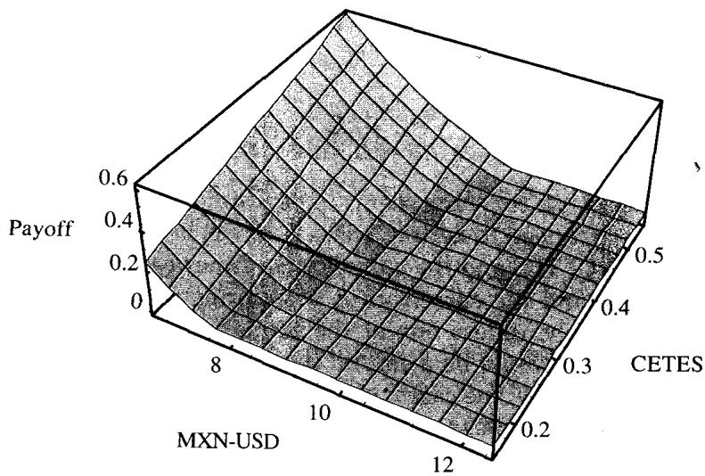
图显示票据的大部分支付落在东北区域，对应更高的 CETES 加上更强的比索，这在现实里不太可能发生。不必定价就能看出这块区域概率很低：操作者通常预期高息货币走弱时升息、罕见的走强时降息。内嵌的货币期权只在这种区域才起作用。而且比索的预期回报远在初始汇率的右侧，因为墨西哥远期贴水（美元升水）。
假设 1 年远期 = CETES（为教学简化抹掉收益率曲线）， 为利差，按条款书可得信息取 22.5%（美墨利差）。则
相当于 9.64 比索兑 1 美元。结论分两步：第一，如销售员所说，这张票据（在无违约风险时）确有某种 optionality，因为它在地图大部分区域不支付、却可能在某处支付，按随机占优（stochastic dominance）规则它需要值一点权利金。第二，评估这个 optionality 要计算落在地图每一点的概率，而操作者已直觉确立那些隆起区域很不可能。
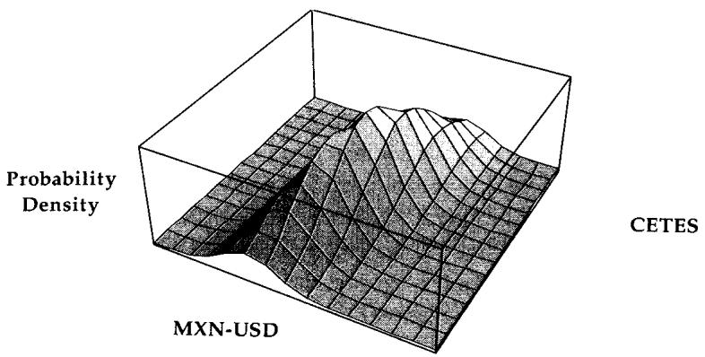
图 22.9 显示在 75% 相关性假设下，落在图 22.8 每一点的概率。Taleb 在此连下两个警告。
第一个警告关于相关性。这是一张到期地图，需要用更长期的相关性。用日度相关性会引入噪声，对墨西哥这种异常市场意义不大。换个角度，用方差比（variance ratio）方法看，采样频率会带来偏差：更短的采样周期会显示更低的相关性度量。最后，上行相关性通常不同于下行相关性（第 15 章讨论）。
第二个警告关于估值的时间跨度。若操作者面对的是均值回复过程或任何带异方差（heteroskedasticity）的过程，就要警惕" 时间平方根法则"（即方差与时间跨度线性成比例）可能不成立。因此不能用日度测量的波动率去给最终支付定价（见第 6 章）。
理论映射：条件支付、有偏资产与"负 Poisson 跳跃"
把两张地图在脑中叠起来，就能看到支付的条件性本质。东北区域（高利率、强货币、同时低违约风险）几乎不会出现，因为高利率、弱货币、高违约风险三者之间有一种同义反复的关系。这正是相关性产品的核心难点：它的价值集中在一块"由相关性结构决定其概率"的区域，而这块区域的概率又对相关性极其敏感。
敏感性分析给出两条静态结论：CETES 或货币任一波动率上升，票据静态升值（图 22.10 的山峰变厚、覆盖更多支付区域）；两者相关性走弱，票据静态升值（图 22.11 的山峰变得不那么对角）。
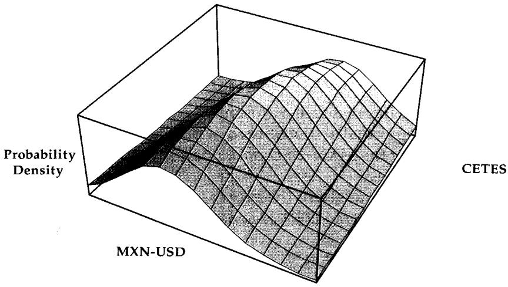
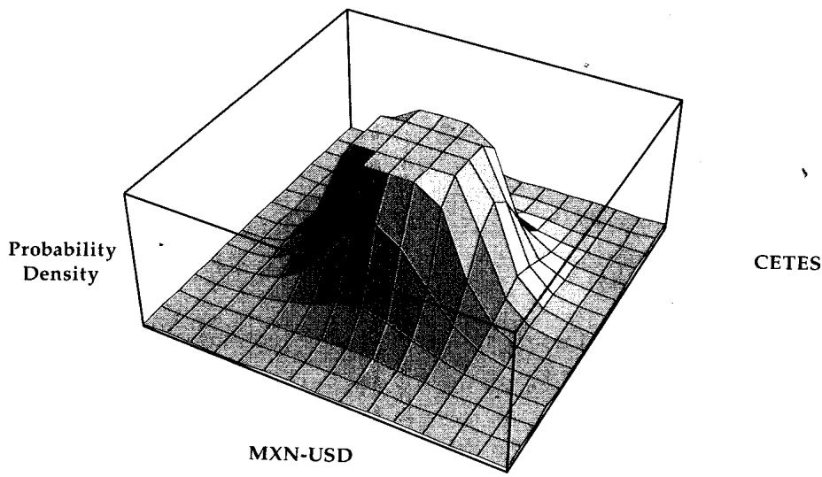
但 Taleb 强调，对这种产品做静态希腊字母分析没有真正的好处，所以他跳过了敏感性分析。原因在于墨西哥是第 15 章定义的"有偏资产"（biased asset）：它的行为依赖市场状态，恐慌时波动率更高，且下行相关性高于上行相关性，这是一个同时作用于利率和货币对的"负 Poisson"过程造成的。如果两者由"扩散加一个共同负跳跃"驱动，那么在恐慌期之外它们表现出相对独立（扩散，低相关），恐慌期内则高度同步（跳跃，高相关）。
这把相关性产品的风险讲到了根上。常数相关性的高斯框架会系统性地误判这种结构：平时测出的低相关让你以为分散效应保护着你，而真正决定票据命运的尾部区域恰恰是相关性跳到接近 1 的恐慌时刻。用我们的语言说，这是一个 state-dependent correlation（状态依赖相关性） 加 common jump（共同跳跃） 的模型，静态的 在状态切换时失效。结论很直接：相关性依赖的产品，尤其写在有偏资产上的，太难，不能听信随意的意见。
理论映射：两国悖论与 numeraire 相对性
定价注记里 Taleb 演示了一个学院派读者会心一笑的细节。以美元为 numeraire，USD-MXN 服从
其期望恰好是 。但若改用 MXN-USD 作 numeraire，同一汇率的倒数过程的期望变成
于是 USD-MXN 的期望是 9.645，而 MXN-USD（在 35% 货币波动率下）折回来对应 10.90。同一个汇率，从两个 numeraire 算出的远期不一致，差的正是那一项 。这就是著名的两国悖论（two-country paradox），也叫 Siegel 悖论：它来自 Jensen 不等式作用在 这个凸函数上，。CETES 利率则带一个与货币的相关性 ：
票据公允价值最终是对 、 两个标准正态做二重积分：
它可以用标准定价技术算出。这个二重积分的结构清楚地暴露了产品的本质：它是写在两个相关随机变量（货币、利率）上的期权， 通过 这个 Cholesky 分解式进入，相关性一旦错估，整个积分的重心就偏了。
五、本章综述：理论与实务的对照
| Taleb 的实务命题 | 对应的理论命题 |
|---|---|
| 相关性是可交易的，有 correlation vega | ；协方差矩阵 的非对角元是状态变量 |
| 二选一结构 翻倍、 退化 | ，价差方差 |
| 多资产 delta 是梯度、gamma 是矩阵 | 、Hessian ； 即混合偏导可交换 |
| total/uncorrelated delta | 二次型 = 组合瞬时方差 |
| 相信相关性稳定 vs 阴谋论者 | 对 取不同估计，把 投影到不同方向 |
| outperformance option = 一个资产 + 价差 | Margrabe，change of numeraire 降维 |
| 对数正态之和不再对数正态，积/商仍是 | 后正态可加； 不可拆 |
| 篮子伪香草、long 期权 short 篮子像 risk reversal | 真实分布偏离对数正态的残差呈 skew 形 |
| 相关性陷阱：价格夹在 ±1 极端之间 | 污染原理 + Jensen： 的凸性 |
| 静态希腊字母对有偏资产无意义 | 状态依赖相关性 + 共同负跳跃（负 Poisson） |
| 两国悖论：两个 numeraire 远期不一致 | Siegel 悖论， |
| 相关相关性进入二重积分 | Cholesky： |
核心观点
第一，多资产期权在希腊字母之外引入了相关性这一整个维度。相关性有 vega、有凸性、会随市场状态跳变，把它当常数是最常见也最危险的错误。
第二，进入高维后，风险管理的对象从标量升级为向量和矩阵。delta 是梯度 ，gamma 是 Hessian，真实方向风险靠二次型 度量。对冲的稳健性取决于对协方差矩阵 估得多准、它在压力下多稳。
第三，线性组合是唯一会破坏对数正态性的结构。和与差没有封闭分布，积与商有。这把篮子、价差和亚式期权归到同一类定价困难，也解释了为什么用篮子伪香草对冲会留下 skew 残差。
第四，相关性陷阱是污染原理在相关性轴上的复述。篮子期权必须夹在两个极端相关性给出的价位之间，因为只要任一波动率独立可变，固定相关性定价就会被 Jensen 不等式纠偏。
第五，相关性依赖产品，尤其写在有偏资产上的，对静态分析免疫。它的价值集中在尾部，而尾部恰是相关性跳向 1 的恐慌区。这类产品不能听信随意意见，必须用条件状态、跳跃和长期相关性来研究。
面对一张新结构的操作清单
读完本章，遇到任何带第二个标的的结构，可依次自问：
- 它属于哪一类？选择（max/min）、线性组合（和/差/篮子），还是乘积/商？
- 它有几个 correlation vega？相关性矩阵的哪几对最关键？ 是否保持半正定？
- delta 是不是已经升级为梯度 ？我该看偏 delta 还是 total delta ？
- 标的里有没有"和/差"？如果有，它就不是对数正态，我假设谁对数正态？这个假设会留下多大 skew 残差？
- 如果只测某一维敏感性，对应的伪香草是什么（risk reversal 测 skew、calendar 测期限结构）？
- 价格有没有夹在 与 给出的边界之间？哪一方在哪个极端 short convexity？
- 标的是不是有偏资产？相关性在恐慌时会不会跳向 1？上行相关性和下行相关性一样吗？
- 估值时间跨度内 法则成立吗？该用瞬时还是期限（到期）波动率与相关性？
- 涉及货币时，我用的是哪个 numeraire？换 numeraire 会不会触发两国悖论？
一句话收束
本章最该记住的一句：多资产期权真正卖的是相关性，而相关性是一个有 vega、有凸性、会在恐慌中跳向 1 的状态变量，所以定这类产品的价从来不是把 当常数代进公式，而是把价格夹在两个极端相关性之间、并对它在压力下的跳变留足余量。